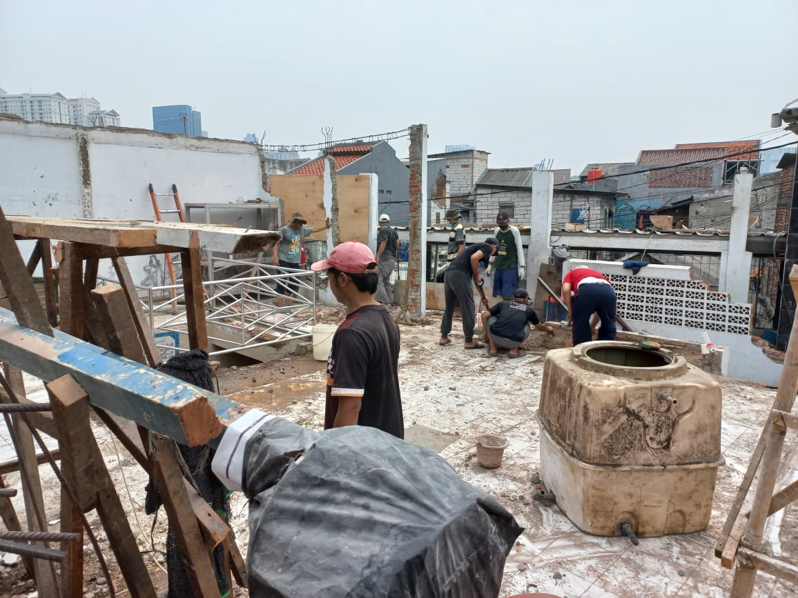
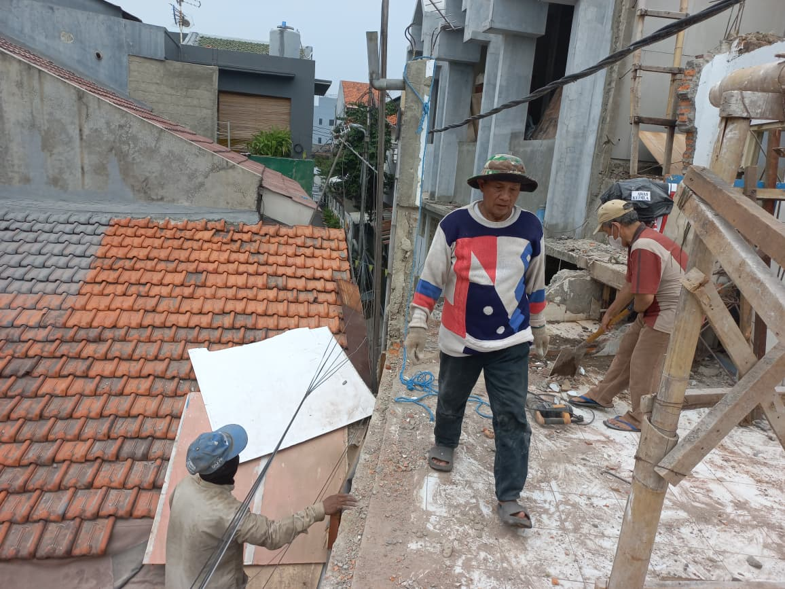

Pembangunan Masjid
Bersama membangun rumah Allah. Progress renovasi dan perluasan Masjid Al Iman.
Progress Renovasi Tahap Berjalan
Saat ini kami sedang melakukan pekerjaan struktur, pengecoran dak, dan perbaikan fasilitas utama. Dukungan Anda sangat berarti.
Estimasi Penyelesaian: 65%

